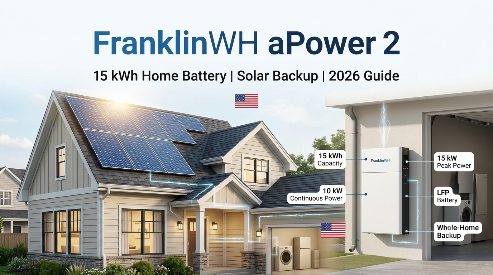

FRANKLINWH HOME BATTERY · U.S. MARKET
FranklinWH aPower 2
A high-capacity LFP home battery built for whole-home backup, solar energy storage and flexible energy management. The aPower 2 provides 15 kWh of AC energy and up to 10 kW of continuous output per unit.

PRODUCT SPECIFICATIONS
aPower 2 — U.S. Reference Specs
Price: Installed cost varies by installer, location, aGate configuration, solar equipment and electrical work. Treat online price ranges as market estimates rather than a fixed FranklinWH retail price.
| Usable system energy | 15 kWh AC per unit |
|---|---|
| Battery chemistry | Lithium iron phosphate (LFP) |
| Continuous discharge | Up to 10 kW |
| Peak output | Up to 15 kW for 10 seconds |
| Maximum charge power | 8 kW continuous |
| Round-trip efficiency | 90% (grid → battery → load, beginning-of-life reference) |
| AC voltage | 120/240 V or 120/208 V, 60 Hz |
| Coupling | AC-coupled |
| Warranty | 15 years or 60 MWh throughput |
| Expansion | Up to 15 aPower 2 units / 225 kWh per aGate |
| Operating environment | Indoor or outdoor; IP67 battery pack and inverter |
| Typical noise | 30 dBA |
Why FranklinWH aPower 2 Is Interesting for U.S. Homes
15 kWh in One Battery
A single aPower 2 stores 15 kWh of AC energy, giving homeowners more storage per unit than many smaller modular home batteries.
10 kW Continuous Power
The system can deliver up to 10 kW continuously, making it suitable for demanding household loads when the electrical design and backup configuration support them.
LFP Chemistry
The aPower 2 uses lithium iron phosphate battery cells, a chemistry widely used for stationary energy storage because of its safety and cycle-life characteristics.
Whole-Home Backup Focus
FranklinWH positions the system for whole-home backup and says a single aPower 2 can support large loads such as a 5-ton air conditioner when properly designed.
Solar Integration and the aGate
The aPower 2 is an AC-coupled battery. The FranklinWH aGate acts as the energy-management hub that coordinates the battery with solar, the grid and supported home energy sources. FranklinWH says the aPower 2 is compatible with major solar inverter brands, which can make it attractive for both new solar installations and some retrofit projects.
For a solar homeowner, the basic flow is simple: solar power serves the home first, excess energy can be stored in the battery, and the stored energy can later support the home when solar production falls or the grid goes down.
How Much Backup Can 15 kWh Provide?
Battery runtime depends on the home's actual load, not simply the battery's nameplate capacity. A useful planning formula is:
Approximate runtime (hours) = usable battery energy (kWh) × system efficiency ÷ average load (kW)
| Average home load | Simple 15 kWh energy estimate | Practical takeaway |
|---|---|---|
| 0.5 kW | Up to 30 hours before losses | Very light essential-load backup |
| 1 kW | About 15 hours before losses | Efficient essentials can last much of a day |
| 2 kW | About 7.5 hours before losses | Moderate household load |
| 5 kW | About 3 hours before losses | Heavy loads reduce runtime quickly |
| 10 kW | About 1.5 hours before losses | High-power operation is possible but shortens runtime |
These are simplified planning examples, not guaranteed runtime figures. Actual usable energy, conversion losses, temperature, battery reserve settings and changing loads all affect runtime.
How Many 630W Solar Panels Pair With aPower 2?
A battery does not require a fixed number of solar panels. Panel count should be based on daily energy use, local sunlight, inverter limits and how quickly you want to recharge the battery.
| 630W panels | Array size | Planning use |
|---|---|---|
| 6 panels | 3.78 kW | Small solar array / partial battery recharge |
| 8 panels | 5.04 kW | Balanced residential starting point |
| 10 panels | 6.30 kW | Stronger daily recharge potential |
| 12 panels | 7.56 kW | Useful for higher household consumption |
| 16 panels | 10.08 kW | Larger home / higher energy demand |
The 630W figures are arithmetic array sizes only. The actual permitted PV input depends on the complete FranklinWH system and solar inverter configuration, so panel voltage/current limits must be checked before installation.
FranklinWH aPower 2 vs. Tesla Powerwall 3
| Feature | FranklinWH aPower 2 | Tesla Powerwall 3 |
|---|---|---|
| Battery energy | 15 kWh AC | 13.5 kWh AC |
| Continuous output | Up to 10 kW | Up to 11.5 kW |
| Peak output | 15 kW for 10 seconds | System/configuration dependent |
| Battery chemistry | LFP | Nickel-manganese-cobalt chemistry in the Powerwall 3 battery cells |
| Solar architecture | AC-coupled with aGate energy management | Integrated solar inverter |
| Warranty | 15 years / 60 MWh throughput | 10 years |
| Best fit | High-capacity whole-home backup and flexible system integration | Integrated solar + storage ecosystem |
There is no universal winner. FranklinWH is particularly interesting when storage capacity, LFP chemistry and whole-home energy management are priorities. Powerwall 3 can be attractive when an integrated solar inverter and Tesla ecosystem are the main priorities.
FranklinWH aPower 2 Price in the USA
FranklinWH does not present one universal installed price for every U.S. homeowner. Installation cost can change with the aGate, electrical upgrades, permitting, labor, solar equipment and the number of batteries.
Recent third-party 2026 market estimates commonly place a single aPower 2 plus the required system equipment in the mid-five-figure range when installed, but this should be treated only as a budgeting reference. Get a current installer quote for the exact property and configuration.
FAQs
How much energy does FranklinWH aPower 2 store?
One aPower 2 provides 15 kWh of AC system energy according to FranklinWH's current U.S. datasheet.
Can aPower 2 run an air conditioner?
FranklinWH says the system can start and run a 5-ton air conditioner when properly configured. Actual performance depends on the HVAC unit and complete electrical design.
Can FranklinWH aPower 2 work with solar?
Yes. It is designed as an AC-coupled home battery and FranklinWH says it is compatible with major solar inverter brands.
Is aPower 2 expandable?
Yes. FranklinWH's current datasheet states that up to 15 aPower 2 units can be connected per aGate, for up to 225 kWh of energy.
Is aPower 2 better than Powerwall 3?
It depends on the project. aPower 2 offers 15 kWh per unit and LFP chemistry, while Powerwall 3 offers an integrated solar inverter and up to 11.5 kW continuous AC output. Compare the complete installed system and local installer support.